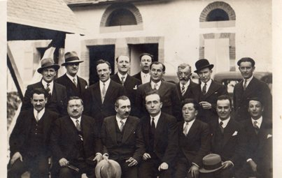
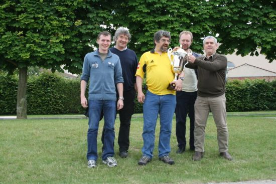

L'Échiquier de Bigorre et ses 100 ans d'histoire
I - Les débuts du club (1930-1950)

III - La Coupe Loubatière
II - Rencontres Tarbes / Huesca
IV - Situation actuelle
Avant de narrer du club la noble mémoire,
Rendons grâce aux bénévoles, artisans de sa gloire.
Car sans ces dévouements, ces soldats du loisir,
Le roi tomberait vite et le jeu sans avenir.
Depuis mille ans, dit-on — ou presque, c'est pareil —
Philippe est au club fidèle, au soleil comme au gel.
Sa licence remonterait aux âges carolingiens,
Ou plus exactement à l'an soixante-douze ancien.
Malgré maints coups fourrés, embuscades et travers,
Il demeure à son poste, imperturbable et fier.
Quand d'autres fuiraient loin sous les boulets du destin,
Lui renouvelle sa cotise et revient le lendemain.
Georges, notre vice-roi, méthodique et vaillant,
Fit prospérer l'Open durant maints printemps.
Successeur de Varmot, personnage légendaire,
Qui lança le tournoi d'une main téméraire.
Grâce à lui, chaque Pâques, Tarbes voit débarquer
Des joueurs convaincus qu'ils vont tout emporter.
Puis repartent souvent, après quelques déboires,
En jurant que la chance a faussé leur histoire.
C'est encore Georges, hardi diplomate aragonais,
Qui forgea les liens que Huesca nous promet.
Une année là-bas, l'autre année par ici,
Et souvent, par bonheur, la coupe nous sourit.
Les Espagnols s'obstinent, courageux et courtois,
À tenter de reprendre ce qui revient aux Tarbais.
Guillaume, le trésorier, veille sur les écus,
Métier fort périlleux quand ils sont disparus.
Professeur ingénieur, savant parmi les sages,
Il dirige une équipe au long de ses voyages.
Il fréquente aussi parfois les réunions du comité,
Exploit qui mériterait quelque médaille dorée.
Car survivre à ces débats, souvent interminables,
Relève davantage du miracle que du raisonnable.
Notre Gérard, docteur, secrétaire éternel,
Semble avoir découvert le secret de l'immortel.
Depuis plusieurs décennies, sans jamais se lasser,
Il rédige les courriers qu'il faut expédier.
Arbitre expérimenté, personnage respecté,
Toujours prêt à servir, jamais découragé.
Son énergie défie la science et ses lois,
Ce qui trouble parfois ses confrères d'autrefois.
Benito, trésorier adjoint, fidèle sentinelle,
Répond toujours présent quand l'appel se fait réel.
Nul ne l'a vu manquer à la moindre mission,
Même lorsqu'elle survient sans explication.
Compagnon d'Yves Cros, joueur de grand renom,
Il perpétue au club son souvenir profond.
Rodolphe vient de Capvern, sans réclamer salaire,
Parcourant les kilomètres avec un zèle exemplaire.
Tandis que d'autres calculent essence et temps perdu,
Lui débarque souriant : « Que faut-il faire de plus ? »
Francis Tugayé fut longtemps notre poète,
Mêlant le Go, les Haïkus et mille historiettes.
Il nous expliquait parfois d'obscures combinaisons,
Dont personne ne saisissait la moindre conclusion.
Ses récits calligraphiques, savamment entortillés,
Plongeaient les auditeurs dans un calme achevé.
On sortait de ses cours plus reposé qu'instruit,
Mais chacun reconnaissait son incomparable esprit.
Voici venir enfin la relève flamboyante :
Jules, Oscar, Alexandre et la troupe triomphante.
Anakin, Mayanka, Adam, Martin également,
Promettent de beaux matins à notre firmament.
Maël vogue désormais vers d'autres horizons ;
Nous gardons son souvenir dans nos conversations.
Tous furent façonnés par Jérôme, le pédagogue,
Qui transforme des novices en stratèges sans équivoque.
Vers l'an deux mille environ, il reprit le flambeau
De Jean Duché, parti beaucoup trop tôt.
Merci donc à Jérôme, patient bâtisseur,
Qui cultive les talents avec ardeur et cœur.
Et comment oublier Jean-Louis Carassus,
Archiphilologue éminent, phénomène absolu ?
Lors des trajets vers Toulouse, il captive l'assistance,
Déployant son savoir avec une rare constance.
Sa parole est un fleuve, un torrent, un océan,
Qui submerge l'auditoire avec enthousiasme constant.
Nul n'a jamais trouvé le bouton permettant
D'interrompre le cours de son récit savant.
Ainsi vit l'Échiquier, porté par ses héros,
Ses bavards, ses sages, ses poètes, ses costauds.
Et si le roi demeure encore bien protégé,
C'est grâce à ces passionnés qui refusent d'abdiquer.
Car un club d'échecs n'est ni des murs ni du bois :
Ce sont d'abord des amis qui avancent pas à pas.
— Écrit par Philippe Phalippou —
— Introduction à l'histoire du club —
Avant de narrer du club la noble mémoire,
Rendons grâce aux bénévoles, artisans de sa gloire.
Car sans ces dévouements, ces soldats du loisir,
Le roi tomberait vite et le jeu sans avenir.
Depuis mille ans, dit-on — ou presque, c'est pareil —
Philippe est au club fidèle, au soleil comme au gel.
Sa licence remonterait aux âges carolingiens,
Ou plus exactement à l'an soixante-douze ancien.
Malgré maints coups fourrés, embuscades et travers,
Il demeure à son poste, imperturbable et fier.
Quand d'autres fuiraient loin sous les boulets du destin,
Lui renouvelle sa cotise et revient le lendemain.
Georges, notre vice-roi, méthodique et vaillant,
Fit prospérer l'Open durant maints printemps.
Successeur de Varmot, personnage légendaire,
Qui lança le tournoi d'une main téméraire.
Grâce à lui, chaque Pâques, Tarbes voit débarquer
Des joueurs convaincus qu'ils vont tout emporter.
Puis repartent souvent, après quelques déboires,
En jurant que la chance a faussé leur histoire.
C'est encore Georges, hardi diplomate aragonais,
Qui forgea les liens que Huesca nous promet.
Une année là-bas, l'autre année par ici,
Et souvent, par bonheur, la coupe nous sourit.
Les Espagnols s'obstinent, courageux et courtois,
À tenter de reprendre ce qui revient aux Tarbais.
Guillaume, le trésorier, veille sur les écus,
Métier fort périlleux quand ils sont disparus.
Professeur ingénieur, savant parmi les sages,
Il dirige une équipe au long de ses voyages.
Il fréquente aussi parfois les réunions du comité,
Exploit qui mériterait quelque médaille dorée.
Car survivre à ces débats, souvent interminables,
Relève davantage du miracle que du raisonnable.
Notre Gérard, docteur, secrétaire éternel,
Semble avoir découvert le secret de l'immortel.
Depuis plusieurs décennies, sans jamais se lasser,
Il rédige les courriers qu'il faut expédier.
Arbitre expérimenté, personnage respecté,
Toujours prêt à servir, jamais découragé.
Son énergie défie la science et ses lois,
Ce qui trouble parfois ses confrères d'autrefois.
Benito, trésorier adjoint, fidèle sentinelle,
Répond toujours présent quand l'appel se fait réel.
Nul ne l'a vu manquer à la moindre mission,
Même lorsqu'elle survient sans explication.
Compagnon d'Yves Cros, joueur de grand renom,
Il perpétue au club son souvenir profond.
Rodolphe vient de Capvern, sans réclamer salaire,
Parcourant les kilomètres avec un zèle exemplaire.
Tandis que d'autres calculent essence et temps perdu,
Lui débarque souriant : « Que faut-il faire de plus ? »
Francis Tugayé fut longtemps notre poète,
Mêlant le Go, les Haïkus et mille historiettes.
Il nous expliquait parfois d'obscures combinaisons,
Dont personne ne saisissait la moindre conclusion.
Ses récits calligraphiques, savamment entortillés,
Plongeaient les auditeurs dans un calme achevé.
On sortait de ses cours plus reposé qu'instruit,
Mais chacun reconnaissait son incomparable esprit.
Voici venir enfin la relève flamboyante :
Jules, Oscar, Alexandre et la troupe triomphante.
Anakin, Mayanka, Adam, Martin également,
Promettent de beaux matins à notre firmament.
Maël vogue désormais vers d'autres horizons ;
Nous gardons son souvenir dans nos conversations.
Tous furent façonnés par Jérôme, le pédagogue,
Qui transforme des novices en stratèges sans équivoque.
Vers l'an deux mille environ, il reprit le flambeau
De Jean Duché, parti beaucoup trop tôt.
Merci donc à Jérôme, patient bâtisseur,
Qui cultive les talents avec ardeur et cœur.
Et comment oublier Jean-Louis Carassus,
Archiphilologue éminent, phénomène absolu ?
Lors des trajets vers Toulouse, il captive l'assistance,
Déployant son savoir avec une rare constance.
Sa parole est un fleuve, un torrent, un océan,
Qui submerge l'auditoire avec enthousiasme constant.
Nul n'a jamais trouvé le bouton permettant
D'interrompre le cours de son récit savant.
Ainsi vit l'Échiquier, porté par ses héros,
Ses bavards, ses sages, ses poètes, ses costauds.
Et si le roi demeure encore bien protégé,
C'est grâce à ces passionnés qui refusent d'abdiquer.
Car un club d'échecs n'est ni des murs ni du bois :
Ce sont d'abord des amis qui avancent pas à pas.
— Écrit par Philippe Phalippou
I - Les débuts de club (1930-1950)
Le "cercle" a été créé en 1925 à l'initiative de Marc Lasserre.
Dès 1926, il organise son premier tournoi ainsi que des rencontres par équipes contre Pau et Toulouse, puis des tournois triangulaires Tarbes-Pau-Bayonne et Tarbes-Lourdes-Toulouse. Dans ce cadre est également organisé le tournoi des 3B (Basque, Béarn et Bigorre).
En 1932, le comité directeur a l'honneur d'accueillir Alexander Alekhine (voir encadré ci-dessous), champion du monde d'échecs, pour une simultanée restée dans les mémoires. Il dispute 20 parties (dont 2 à l'aveugle) et les remporte toutes en 30 minutes de sprint, sans interruption, devant un public nombreux.
En 1933, Tarbes remporte la 3e édition de la Coupe des 3B devant Biarritz, Pau
et Lourdes. À l'issue du tournoi, les clubs des 3B, sur les directives de la FFE fondent la
Ligue régionale "Ligue d'Échecs de l'Adour". La coupe des 3B devient alors la coupe de
l'Adour.
Cette époque fut marquée par de nombreuses simultanées face à des Maîtres Internationaux et
Grands Maîtres, entrecoupées de banquets pour célébrer les victoires ou consoler les
défaites.
EN SAVOIR PLUS SUR Alekhine
Alexandre Alekhine, joueur d'échecs russe naturalisé français :
1892-1946
4ème champion du monde entre 1927-1935 et de 1937 jusqu'à sa mort en 1946. Il
adoptait un style d'attaque féroce et imaginatif.

Le club en 1934, vainqueur pour la deuxième de la coupe des 3B. On peut y voir M.Blavignac, debout, troisième à partir de la gauche.

Photo d'Alekhine, champion du monde à cette époque.
1942 - Le championnat est mis en pause pendant la Seconde Guerre mondiale, le club prend alors le nom de "L'Échiquier de Bigorre" (20 janvier 1942) sous la houlette du Président M. de Lonjon, C'est l'acte de naissance officiel de notre cercle !
En 1949, les Échecs tarbais se divisent en quatre sections : Morane, le Lycée, les cigognes et l'Échiquier de Bigorre (seul survivant à ce jour).
EN SAVOIR PLUS sur l'histoire du club
Plus de détails sur l'histoire du club : Histoire de l'Échiquier de Bigorre jusqu'en 1950.
En savoir plus
II - Rencontres Tarbes / Huesca

Rencontre contre Huesca à Tarbes en 2011
La ville de Tarbes est jumelée à la ville espagnole de Huesca. Ce qui amène à des rencontres échiquéennes presque chaque année qui se déroulent alternativement dans les deux villes. La dernière rencontre a eu lieu en 2019.
Le jumelage Tarbes-Huesca, sur le plan échiquéen, existe depuis 1975. En septembre de cette année-là, à l'invitation du Président de Tarbes Monsieur Rigel, une imposante délégation de 15 espagnols, conduits par leur président Monsieur Bellenguer, était reçue à la salle des fêtes de la Mairie de Tarbes.

Rencontre contre Huesca à Huesca en 2013
EN SAVOIR PLUS sur les rencontres Tarbes - Huesca
III - La Coupe Loubatière
La Coupe Loubatière est la plus populaire des compétitions par équipes destinées aux joueurs amateurs. Créée en 1991 et organisée par la FFE, elle réunit chaque année plus de 400 équipes de 4 joueurs venant de toute la France. L'Échiquier de Bigorre participe régulièrement à cette très populaire compétition.

Composition de l'équipe : Patrick Moulié, Frédéric Bodlet, Richard Grimai et Taiwan Bandan.
A deux reprises, le club s'était distingué en 2003 et en 2005, terminant en finale ou demi-finale avec les capitaines Jérôme Langlois et Georges Baumgartner.
En 2008, l'équipe de l'Échiquier de Bigorre, emmenée par son capitaine Patrick Moulié et son organisateur François Labarthe, réussit à passer toutes les épreuves et à gagner la finale.
EN SAVOIR PLUS sur la Coupe Loubatière
Retrouvez le parcours de l'Échiquier de Bigorre dans cette compétition nationale.
En savoir plus